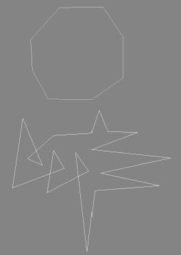
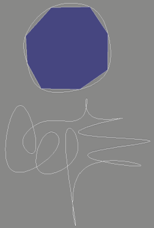
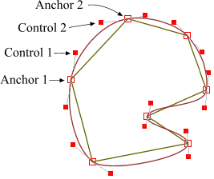
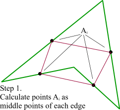
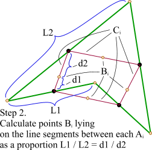
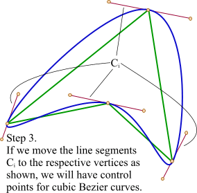
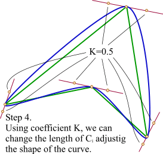
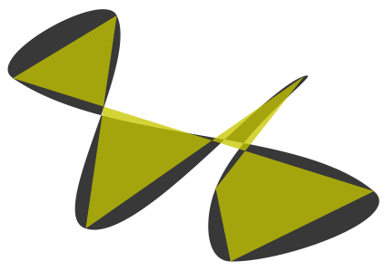

| |
Initially, there was a question in
comp.graphic.algorithms
how to interpolate a polygon with a curve in such a way that the resulting curve would
go thruogh all its vertices. Gernot Hoffmann suggested
to use a well-known B-Spline interpolation.
Here is his original article.
B-Spline works good and it behaves like an elasitic ruler fixed in vertices of the polygon.


|

But I had a gut feeling that there must be a simplier metod.
For example, an approximation with cubic Bezier curves. A Bezier curve has two anchor points
(begin and end) and two control ones (CP) that determine its shape. More information about Bezier
curves can be found using any search engine, for example, on
Paul Bourke's excellent site.
Our anchor points are given, they are pair of vertices of the polygon. The question was,
how to calculate the control points. I ran XaraX and drew
this picture. It was pretty easy job and I decided to try to calculate their coordinates.
It was obvious that the control points of two adjacent edges plus the vertex between
them should form one straight line. Only in this case the two adjacent curves will be connected
smoothly. So, the two CP could be the reflection of each other,
but... not quite. Reflection assumes equal distances from the central point. For our case
it's not correct. First, I tried to calculate a bisectrix between two edges and then take
points on the perpendicular to it. But as shown in the picture, the CP not always lie
on the perpendicular to the bisecrix.

Finally, I found a very simple method that does not require any complicated math.
First, we take the polygon and calculate the middle points Ai of its edges.
|

Here we have line segments Ci that connect two points Ai of the
adjacent segments. Then, we should calculate points Bi as shown in this picture.
|

The third step is final. We simply move the line segments Ci in such a way that
their points Bi coincide with the respective vertices. That's it,
we calculated the control points for our Bezier curve and the result looks good.
|

One little improvement. Since we have a straight line that determines the place of our
control points, we can move them as we want, changing the shape of the resulting
curve. I used a simple coefficient K that moves the points along the line relatively to
the initial distance between vertices and control points. The closer the control points
to the vertices are the sharper figure will be obtained.
|
Below is the result of rendering a popular in SVG
lion in its original form and with Bezier interpolation with K=1.0
|
And the enlarged ones.
|
The method also works with self-intersecting polygons.
The examples below show that the result is pretty interesting.

|
This method is pure heuristic and empiric. It probably gives a wrong result from the
point of view of strict mathematical modeling. But in practice the result is good enough
and it requires absolut minimum of calculations. Below is the source code
which has been used to generate the lions shown above. It's
not optimal and just an illustration. It calculates some variables twice, while in
real programs we can store and reuse them in the consecutive steps.
// Assume we need to calculate the control
// points between (x1,y1) and (x2,y2).
// Then x0,y0 - the previous vertex,
// x3,y3 - the next one.
double xc1 = (x0 + x1) / 2.0;
double yc1 = (y0 + y1) / 2.0;
double xc2 = (x1 + x2) / 2.0;
double yc2 = (y1 + y2) / 2.0;
double xc3 = (x2 + x3) / 2.0;
double yc3 = (y2 + y3) / 2.0;
double len1 = sqrt((x1-x0) * (x1-x0) + (y1-y0) * (y1-y0));
double len2 = sqrt((x2-x1) * (x2-x1) + (y2-y1) * (y2-y1));
double len3 = sqrt((x3-x2) * (x3-x2) + (y3-y2) * (y3-y2));
double k1 = len1 / (len1 + len2);
double k2 = len2 / (len2 + len3);
double xm1 = xc1 + (xc2 - xc1) * k1;
double ym1 = yc1 + (yc2 - yc1) * k1;
double xm2 = xc2 + (xc3 - xc2) * k2;
double ym2 = yc2 + (yc3 - yc2) * k2;
// Resulting control points. Here smooth_value is mentioned
// above coefficient K whose value should be in range [0...1].
ctrl1_x = xm1 + (xc2 - xm1) * smooth_value + x1 - xm1;
ctrl1_y = ym1 + (yc2 - ym1) * smooth_value + y1 - ym1;
ctrl2_x = xm2 + (xc2 - xm2) * smooth_value + x2 - xm2;
ctrl2_y = ym2 + (yc2 - ym2) * smooth_value + y2 - ym2;
|
And the source code of an approximation with a cubic Bezier curve.
// Number of intermediate points between two source ones,
// Actually, this value should be calculated in some way,
// Obviously, depending on the real length of the curve.
// But I don't know any elegant and fast solution for this
// problem.
#define NUM_STEPS 20
void curve4(Polygon* p,
double x1, double y1, //Anchor1
double x2, double y2, //Control1
double x3, double y3, //Control2
double x4, double y4) //Anchor2
{
double dx1 = x2 - x1;
double dy1 = y2 - y1;
double dx2 = x3 - x2;
double dy2 = y3 - y2;
double dx3 = x4 - x3;
double dy3 = y4 - y3;
double subdiv_step = 1.0 / (NUM_STEPS + 1);
double subdiv_step2 = subdiv_step*subdiv_step;
double subdiv_step3 = subdiv_step*subdiv_step*subdiv_step;
double pre1 = 3.0 * subdiv_step;
double pre2 = 3.0 * subdiv_step2;
double pre4 = 6.0 * subdiv_step2;
double pre5 = 6.0 * subdiv_step3;
double tmp1x = x1 - x2 * 2.0 + x3;
double tmp1y = y1 - y2 * 2.0 + y3;
double tmp2x = (x2 - x3)*3.0 - x1 + x4;
double tmp2y = (y2 - y3)*3.0 - y1 + y4;
double fx = x1;
double fy = y1;
double dfx = (x2 - x1)*pre1 + tmp1x*pre2 + tmp2x*subdiv_step3;
double dfy = (y2 - y1)*pre1 + tmp1y*pre2 + tmp2y*subdiv_step3;
double ddfx = tmp1x*pre4 + tmp2x*pre5;
double ddfy = tmp1y*pre4 + tmp2y*pre5;
double dddfx = tmp2x*pre5;
double dddfy = tmp2y*pre5;
int step = NUM_STEPS;
// Suppose, we have some abstract object Polygon which
// has method AddVertex(x, y), similar to LineTo in
// many graphical APIs.
// Note, that the loop has only operation add!
while(step--)
{
fx += dfx;
fy += dfy;
dfx += ddfx;
dfy += ddfy;
ddfx += dddfx;
ddfy += dddfy;
p->AddVertex(fx, fy);
}
p->AddVertex(x4, y4); // Last step must go exactly to x4, y4
}
|
You can download a working application for Windows that renders the lion,
rotates and scales it, and generates random polygons.
Interpolation with Bezier curves
Press left mouse button and drag to rotate and scale the image around the center point.
Press right mouse button and drag left-right to change the coefficient of smoothing (K).
Value K=1 is about 100 pixels from the left border of the window.
Each left double-click generates a random polygon. You can also rotate and
scale it, and change K.
|
|
| |